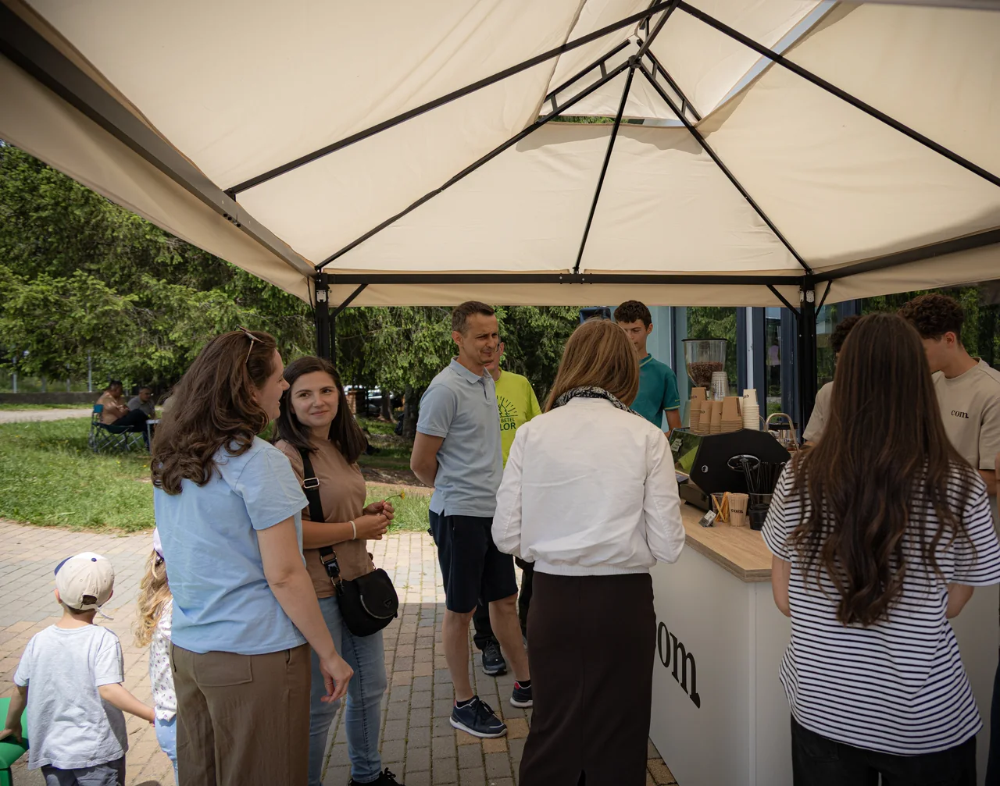
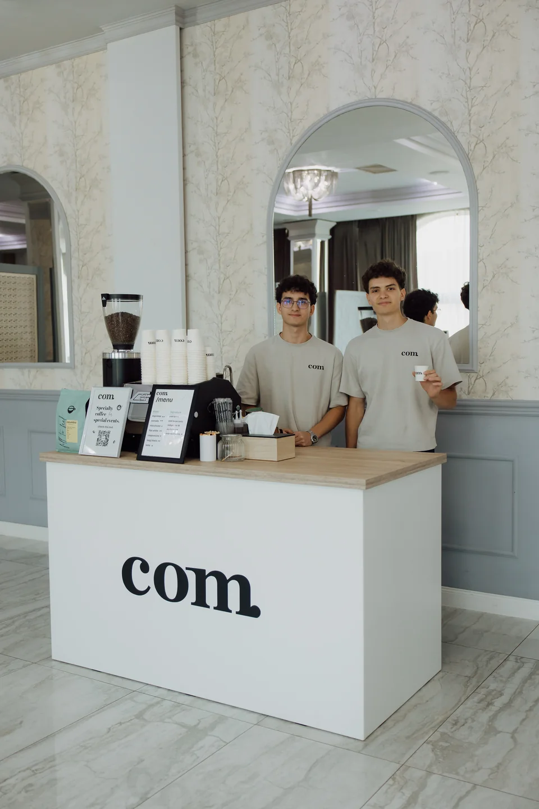
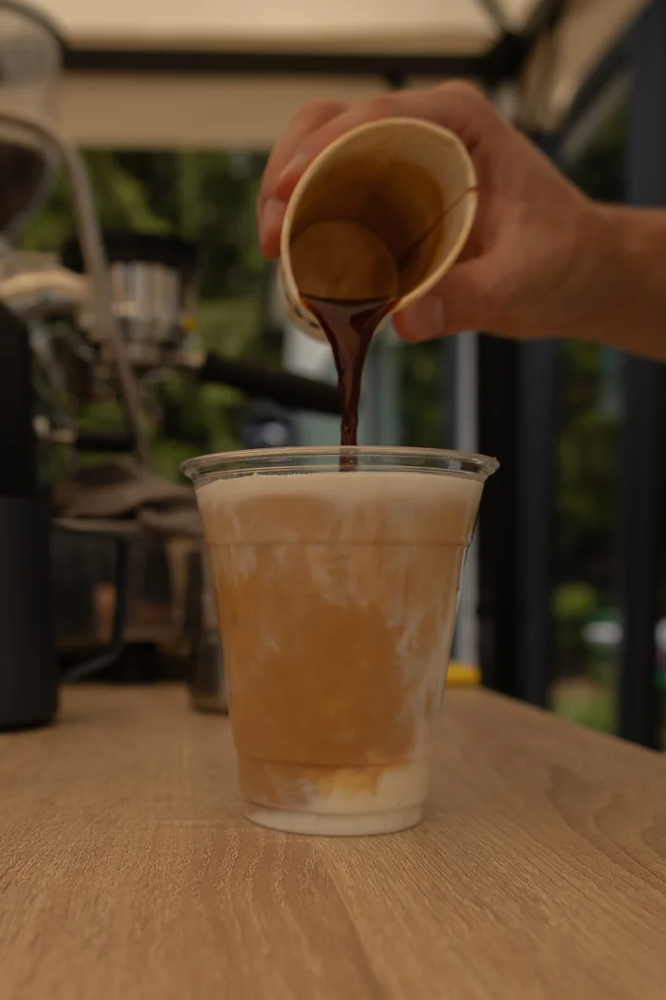
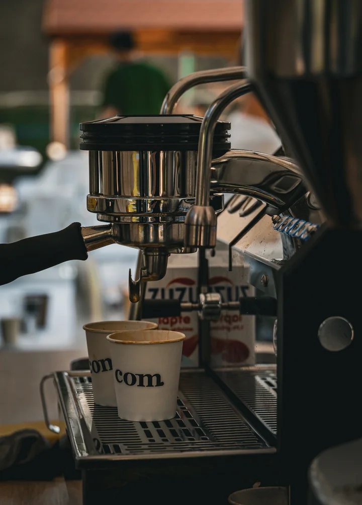

com. la evenimentul tău
Locul unde
încep
conversațiile.
Între două dansuri. În pauza de la birou. Într-o după-amiază afară. Venim cu barul mobil și cafeaua de specialitate, acolo unde vă adunați.
Invită-ne la eveniment
Multe ocazii. Aceeași grijă.
O cafea bună
își găsește
locul.
Nu toate evenimentele au același ritm. Vorbim despre al tău și alegem împreună meniul, intervalul de servire și locul barului.
Ce punem în ceașcăNunți
Un espresso înainte de dans. Un cappuccino la o poveste cu cineva drag. Barul de cafea devine locul în care invitații se întâlnesc, pe parcursul zilei voastre.
- Pregătim împreună
- Momentul servirii, selecția de băuturi și amplasarea barului în locație.
Corporate
O pauză în care oamenii chiar se întâlnesc. La birou, la o conferință sau la un eveniment de echipă, cafeaua pregătită pe loc oferă un motiv bun să înceapă o conversație.
- Pregătim împreună
- Programul pauzelor, numărul estimat de participanți și accesul în spațiul evenimentului.
Târguri &
festivaluri
festivaluri
Printre muzică, oameni și lucruri de descoperit, o oprire la cafea își găsește mereu locul. Aducem barul com. în mijlocul evenimentului și discutăm un meniu potrivit atmosferei.
- Pregătim împreună
- Amplasarea, intervalul de servire, accesul la curent și protecția barului în cazul evenimentelor în aer liber.
Petreceri
private
private
Aniversări, botezuri și întâlniri cu oamenii apropiați. Noi ne ocupăm de cafea, iar tu ai încă un motiv să rămâi la masă, în grădină sau în mijlocul poveștilor.
- Pregătim împreună
- Locul disponibil, preferințele invitaților și băuturile cu sau fără cafea din meniul nostru.
Din albumul com.
Așa arată
împreună.
Dincolo de meniu, rămân momentele. Oameni lângă bar, mâini ocupate cu cafeaua și câteva cadre din zilele petrecute împreună.

De partea cealaltă a barului
Ne ocupăm
de fiecare
„încă una”.
Cafeaua se pregătește pe loc. Alegi din meniul clasic sau încerci ceva din selecția Signature. Un espresso scurt, un Flat White ori un Iced Latte — fiecare își găsește preferata.
Explorează meniul
Lucrurile mici contează
De la primul shot
la ultimul detaliu.
Râșnită, extrasă, turnată. Grija pentru cafea se vede cel mai bine de aproape.


De la idee la prima cafea
Facem loc
unui moment bun.
Începem cu câteva detalii. Restul le punem la punct împreună.
Ne povestești.
Ce pregătești, unde, când și pentru câți invitați. Ne poți spune și ce băuturi ți-ar plăcea să găsești la bar.
Ne organizăm.
Verificăm disponibilitatea și discutăm oferta, meniul, durata servirii și detaliile de acces, spațiu și curent.
Ne întâlnim.
După confirmarea detaliilor și a rezervării, pregătim barul pentru evenimentul tău. Tu îi primești pe oameni. Noi, comenzile de cafea.
Următorul loc în care ne vedem?
La evenimentul tău.
Spune-ne ce pregătești. Începem de acolo.
Hai să-l pregătim împreună